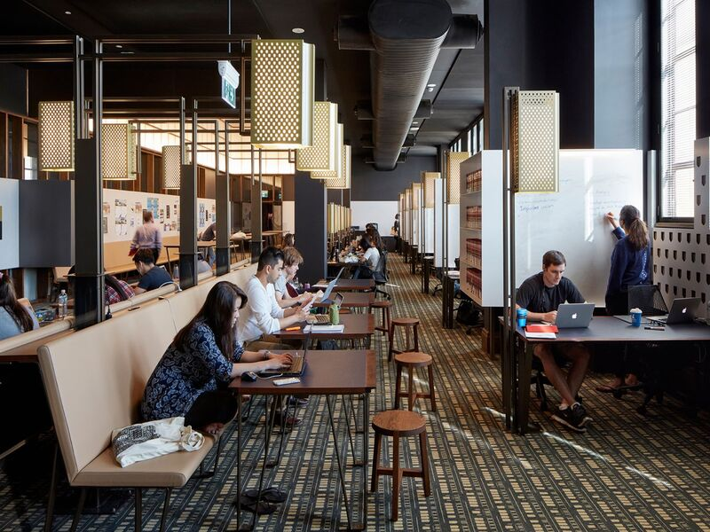
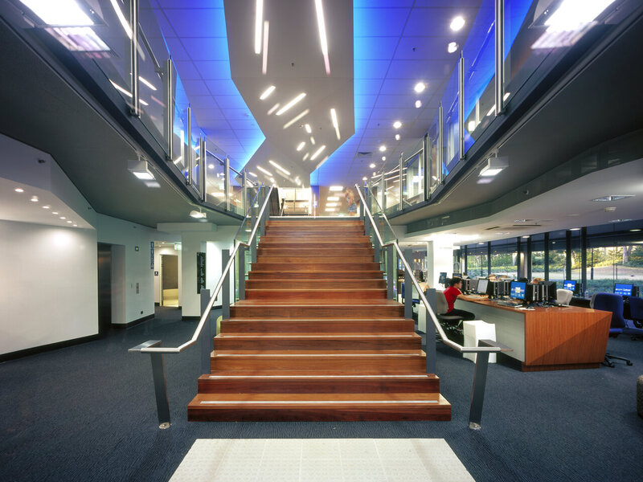
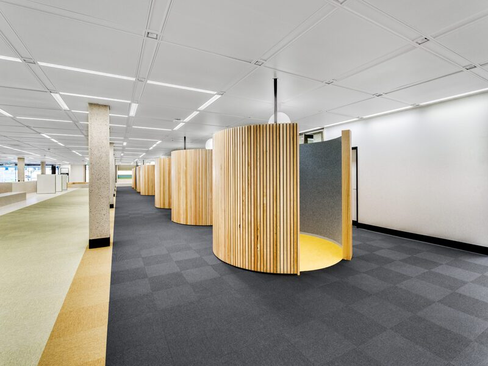

Places to study

Law Library
Located in the Forgan Smith building, the Law library has both group and quiet study spaces spanning across multiple levels.

Bio science Library (BSL)
The Bio-science library is a great space for group studies. This library has resting areas, cafe/restaurant attached to it making it a convenient study space.

Central Library
The central library is a recent addition to UQ, and has both isolated study rooms as well as open spaces for group studies.